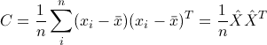
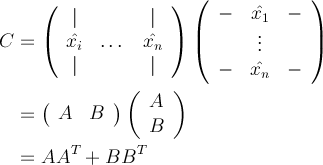
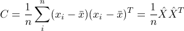
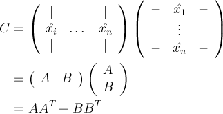
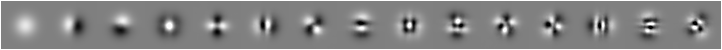

The Principal Components of Natural Images
This example program reproduces the key result in the seminal 1992 computer vision paper The Principal Components of Natural Images by Hancock et al. We perform the same experiment described in that paper using HIPI, which enables analyzing a much larger collection of images than the 15 used in the original paper. To understand this program, we need to first review a bit of linear algebra.
Our goal is to reveal statistical properties of the pixel values in small patches of the types of images we often capture (e.g., snapshots, selfies, landscape photos, etc.). Why would this be useful? Well, this would tell us something about the structure of natural images and would provide a basis for certain image processing and compression algorithms. Specifically, we are interested in computing the second-order statistics, also called the covariance, which gives the expected value of the squared deviation across all pairs of pixels in a patch. It turns out that the eigenvectors of the covariance matrix reveal the dominant modes of variance across the set of input patches. Because these are so useful for many data analysis and compression tasks they are given the name principal components and this process is often called Principal Component Analysis.
Following Hancock et al. we will be using image patches that are 48 x 48 in size. Let's assume that we have collected n such patches by randmoly sampling them from a set of images downloaded from the Internet. If we denote a single image patch by the vector x then the sample covariance computed from these n patches is given by the following formula: 
where the subscript 'i' indexes the set of n images and x̄ is the average, or mean, image patch. Next, let's rewrite this expression in matrix form using x̂ to denote mean-centered patches (xi - x̄): 
Writing the expression in this way makes it a bit easier to see how to compute the covariance matrix C using MapReduce. Our approach is to have each map task compute the product of a different submatrix (e.g., one map task will compute AAT, another will compute BBT, and so on) and the reduce task will perform the final aggregation to obtain C. Note, however, that the mean must be known ahead of time. Although there is a way to rewrite this computation that allows computing the mean and covariance with just one pass through the data, we chose this formulation for simplicity and because it illustates the use of the very handy MapReduce job cache file. Specifically, our program consists of two MapReduce jobs, the first computes the mean and the second uses this mean to compute the covariance. Our program makes use of the Job::addCacheFile() and Job::getCacheFiles() methods to distribute the mean patch to all of the covariance map tasks.
After the covariance matrix is computed, you can use a variety of tools like MATLAB or Python to compute its eigenvectors and obtain the principal components. The HIPI distribution includes MATLAB and Python scripts for doing this in util/readFloatImage.m and util/showCovarianceOutput.py, respectively.
Below are the first 15 principal components reproduced from Hancock et al., which were computed using 20,000 patches, compared to the first 15 principal components obtained with our HIPI program for different values of n up to 10,000,000 patches (we used a random mix of images downloaded from Flickr):
Note that the principle components computed using the HIPI program do not perfectly correlate with the ones reported by Hancock et al., although in most cases they are off by a rotation. We attribute the remaining differences to differences in some parameters like the standard deviation of the Gaussian weighting function (more on this below). These differences may also be due in part to the fact that Hancock et al. used an approximation strategy for computing the principal components which avoids explicit construction of the full covariance matrix. Also, note that the principal components become much better resolved when going from 10,000 patches to 100,000 patches, but don't noticeably improve beyond that number of patches. Finally, note that these components resemble the Fourier or Discrete Cosine Transform basis, which is a central concept in many image compression algorithms such as JPEG.
The runCovariance() method is slightly more complicated and interesting. Note how it calls Job::addCacheFile() to distribute the previously computed mean patch to the covariance map tasks:
The map() method defined in the CovarianceMapper class uses this mean member variable to compute the sample covariance over 100 patches from within one image. In the code below, you may notice that these patches are first converted to grayscale and then Gaussian weighted during the covariance calculation:
Our goal is to reveal statistical properties of the pixel values in small patches of the types of images we often capture (e.g., snapshots, selfies, landscape photos, etc.). Why would this be useful? Well, this would tell us something about the structure of natural images and would provide a basis for certain image processing and compression algorithms. Specifically, we are interested in computing the second-order statistics, also called the covariance, which gives the expected value of the squared deviation across all pairs of pixels in a patch. It turns out that the eigenvectors of the covariance matrix reveal the dominant modes of variance across the set of input patches. Because these are so useful for many data analysis and compression tasks they are given the name principal components and this process is often called Principal Component Analysis.
Following Hancock et al. we will be using image patches that are 48 x 48 in size. Let's assume that we have collected n such patches by randmoly sampling them from a set of images downloaded from the Internet. If we denote a single image patch by the vector x then the sample covariance computed from these n patches is given by the following formula: 
where the subscript 'i' indexes the set of n images and x̄ is the average, or mean, image patch. Next, let's rewrite this expression in matrix form using x̂ to denote mean-centered patches (xi - x̄): 
Writing the expression in this way makes it a bit easier to see how to compute the covariance matrix C using MapReduce. Our approach is to have each map task compute the product of a different submatrix (e.g., one map task will compute AAT, another will compute BBT, and so on) and the reduce task will perform the final aggregation to obtain C. Note, however, that the mean must be known ahead of time. Although there is a way to rewrite this computation that allows computing the mean and covariance with just one pass through the data, we chose this formulation for simplicity and because it illustates the use of the very handy MapReduce job cache file. Specifically, our program consists of two MapReduce jobs, the first computes the mean and the second uses this mean to compute the covariance. Our program makes use of the Job::addCacheFile() and Job::getCacheFiles() methods to distribute the mean patch to all of the covariance map tasks.
After the covariance matrix is computed, you can use a variety of tools like MATLAB or Python to compute its eigenvectors and obtain the principal components. The HIPI distribution includes MATLAB and Python scripts for doing this in util/readFloatImage.m and util/showCovarianceOutput.py, respectively.
Below are the first 15 principal components reproduced from Hancock et al., which were computed using 20,000 patches, compared to the first 15 principal components obtained with our HIPI program for different values of n up to 10,000,000 patches (we used a random mix of images downloaded from Flickr):
 |
| Hancock et al. - First 15 Principle Components (20,000 patches) |
 |
| HIPI - First 15 Principle Components (10,000,000 patches) |
 |
| HIPI - First 15 Principle Components (1,000,000 patches) |
 |
| HIPI - First 15 Principle Components (100,000 patches) |
|  |
| HIPI - First 15 Principle Components (10,000 patches) |
Compiling
Compile covariance by executing the following command in the HIPI root directory (see our general notes on setting up HIPI on your system and using Ant for compilation):
$> ant covariance
Usage
Run covariance by executing the following command in the HIPI root directory:
$> hadoop jar examples/covariance.jar <input HIB> <output directory>
There is also a convenience script located in the examples directory:
$> cd examples $> ./runCovariance.sh <input HIB> <output directory>covariance takes two arguments. The first argument is the path to a HIB on the HDFS. This HIB will provide the source of image patches used to compute the mean and covariance. The second argument is the HDFS path to the output directory that will be created once the program has finished. The resulting mean patch and covariance matrix will be stored in this directory in a raw binary format readable by the scripts in the util directory.
How covariance works
covariance consists of two phases:- Compute the average (mean) of 100 randomly sampled patches taken from each image in the input HIB.
- Compute the covariance matrix using the same set of 100 patches per image along with the mean computed in the previous step.
The Two MapReduce Driver Classes
Every MapReduce job must specify a driver class that configures and executes the job (e.g., specifies the various key/value object types, etc.). The driver classes for covariance are defined in examples/hipi/examples/covariance/Covariance.java. First, take a look at the main() and run() methods defined in the Covariance class:
public static void main(String[] args) throws Exception {
int res = ToolRunner.run(new Covariance(), args);
System.exit(res);
}
public int run(String[] args) throws Exception {
if (args.length !=2) {
System.out.println("Usage: covariance <input HIB> <output directory>");
System.exit(0);
}
if (!runComputeMean(args)) {
return 1;
}
if (!runCovariance(args)) {
return 1;
}
// Indicate success
return 0;
}
main() is the entry point of the program and it simply calls the run() method which performs the two MapReduce jobs described above only if the first one succeeds. Because the operation of the runComputeMean() method is pretty standard so we will forego a detailed explanation here. Please see the DumpHIB example program to learn how to setup a standard HIPI job.The runCovariance() method is slightly more complicated and interesting. Note how it calls Job::addCacheFile() to distribute the previously computed mean patch to the covariance map tasks:
public boolean runCovariance(String[] args) throws Exception {
...
job.addCacheFile(new URI("hdfs://" + args[1] + "/mean-output/part-r-00000"));
...
The Mean Mapper
Here is the map() method in the MeanMapper class along with the helper method generateMeanImage():
public void map(ImageHeader key, FloatImage value, Context context) throws IOException, InterruptedException {
if (value != null && value.getWidth() > N && value.getHeight() > N) {
context.write(new IntWritable(0), generateMeanImage(value, 100, 100));
}
}
// Compute the mean of (xPatchCount * yPatchCount) patches within the input image
private FloatImage generateMeanImage(FloatImage input, int xPatchCount, int yPatchCount) {
FloatImage mean = new FloatImage(N, N, 1);
for (int i = 0; i < xPatchCount; i++) {
int x = (input.getWidth() - N) * i / xPatchCount;
for (int j = 0; j < yPatchCount; j++) {
int y = (input.getHeight() - N) * j / yPatchCount;
FloatImage patch = input.crop(x, y, N, N).convert(FloatImage.RGB2GRAY);
mean.add(patch);
}
}
mean.scale((float) (1.0 / (xPatchCount * yPatchCount)));
return mean;
}
}
This code makes use of several methods in the FloatImage class such as crop() and convert(). The program uses a fixed patch size of N=48 and a fixed 100 x 100 subsampling procedure. Also, note that the output key is always 0, ensuring that all of the partial means will be sent to the same reduce task.
The Mean Reducer
Here is the reduce() method in the MeanReducer class:
public void reduce(IntWritable key, Iterable<FloatImage> values, Context context)
throws IOException, InterruptedException {
FloatImage mean = new FloatImage(N, N, 1);
int total = 0;
for (FloatImage val : values) {
mean.add(val);
total++;
}
if (total > 0) {
mean.scale(1.0f / total);
context.write(key, mean);
}
}
}
Since each of the partial means output by the map tasks were computed using the same number of patches, there is no need to weight these partial means differently in the final sum.
The Covariance Mapper
Recall that the covariance calculation requires the average image patch. This object is accessed inside the Mapper:setup() method defined in CovarianceMapper with the following lines:
// Access the job cache
URI[] files = new URI[1];
if (job.getCacheFiles() != null) {
files = job.getCacheFiles();
} else {
System.err.println("Job cache files is null!");
}
// Read mean from previously run mean job
Path cacheFilePath = new Path(files[0].toString());
FSDataInputStream dis = FileSystem.get(job.getConfiguration()).open(cacheFilePath);
dis.skip(4);
FloatImage image = new FloatImage();
image.readFields(dis);
mean = image.getData();
The dis.skip(4) function call is needed to discard the key (4 bytes long) that was written to the output of the MeanReducer.The map() method defined in the CovarianceMapper class uses this mean member variable to compute the sample covariance over 100 patches from within one image. In the code below, you may notice that these patches are first converted to grayscale and then Gaussian weighted during the covariance calculation:
public void map(ImageHeader key, FloatImage value, Context context) throws IOException, InterruptedException {
if (value != null && value.getWidth() > N && value.getHeight() > N) {
// Holds 100 patches as they are collected from the image
float[][] patchArray = new float[100][N * N];
// Generate mean-subtracted (whitened) and Gaussian weighted patches and stores them in patchArray
for (int i = 0; i < 10; i++) {
int x = (value.getWidth() - N) * i / 10;
for (int j = 0; j < 10; j++) {
int y = (value.getHeight() - N) * j / 10;
FloatImage patch = value.crop(x, y, N, N).convert(FloatImage.RGB2GRAY);
float[] pels = patch.getData();
for (int k = 0; k < N * N; k++) {
// Subtract mean and weight using Gaussian mask
patchArray[i * 10 + j][k] = (pels[k] - mean[k]) * gaussianArray[k];
}
}
}
...
}
}
The Gaussian weighting effectively gives higher weight to the center pixels in a patch (see Hancock et al. for details). Finally, the covariance is computed from the patchArray:
...
// Stores the (N^2 x N^2) covariance matrix AAt
float[] covarianceArray = new float[N * N * N * N];
for (int i = 0; i < N * N; i++) {
for (int j = 0; j < N * N; j++) {
covarianceArray[i * N * N + j] = 0;
for (int k = 0; k < 10; k++) {
covarianceArray[i * N * N + j] += patchArray[k][i] * patchArray[k][j];
}
}
}
context.write(new IntWritable(0), new FloatImage(N * N, N * N, 1, covarianceArray));
}
}
The resulting covariance matrix is represented as a FloatImage and emitted to the reduce task with a call to context.write().
The Covariance Reducer
The reduce() method in the CovarianceReducer class combines the partial covariances emitted by the map tasks into the final covariance. As with the reducer method for the mean program, each map task processes the same number of patches so there is no need to weight the partial covariances differently. The output of reduce is simply the sum of these input covariances, again represented as a FloatImage:
public void reduce(IntWritable key, Iterable<FloatImage> values, Context context) throws IOException, InterruptedException {
// Aggregate sub-matrices in full covariance calculation
FloatImage cov = new FloatImage(N * N, N * N, 1);
for (FloatImage val : values) {
cov.add(val);
}
context.write(key, cov);
}
}
The output of covariance consists of two files named <output directory>/mean-output/part-r-00000 and <output directory>/covariance-output/part-r-00000. These binary files can be viewed using a simple MATLAB or Python program. The HIPI distribution includes sample programs in each of these languages. Here is the MATLAB function that reads a FloatImage into a MATLAB matrix:
function [ y ] = readFloatImage( file )
fid = fopen(file);
if fid ~= 0
fread(fid, 1, 'int32', 0, 'b');
width = fread(fid, 1, 'int32', 0, 'b');
height = fread(fid, 1, 'int32', 0, 'b');
band = fread(fid, 1, 'int32', 0, 'b');
y = reshape(fread(fid, width * height * band, 'float32', 0, 'b'), width, height, band);
else
y = [];
end
end
An extended version of this function was used to generate the result images displayed above:
function [ y ] = readCovarianceOutputAndGenerateImages( file )
fid = fopen(file);
if fid ~= 0
fread(fid, 1, 'int32', 0, 'b');
width = fread(fid, 1, 'int32', 0, 'b');
height = fread(fid, 1, 'int32', 0, 'b');
band = fread(fid, 1, 'int32', 0, 'b');
y = reshape(fread(fid, width * height * band, 'float32', 0, 'b'), width, height, band);
[V,d] = princomp(y);
for n = 1:15
column_data = V(:,n);
I = mat2gray(vec2mat(column_data, 48));
figure, imshow(I)
end
else
y = [];
end
end
If you'd like to learn more about Principal Component Analysis, Singular Value Decomposition, and related topics from linear algebra, we recommend the excellent book Matrix Computations by Gene Golub.